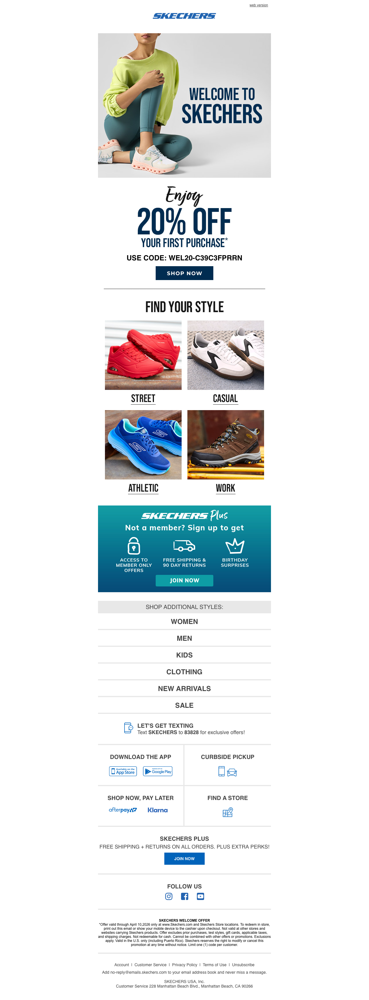

Skechers Email Audit
Welcome to Skechers!
2026-03-11 21:18 · SKECHERS <no-reply@emails.skechers.com>
Business Impact Score: 7/10
Executive Summary
This is a solid, commercially functional welcome / conversion email, but it is overstuffed and not disciplined enough. It accomplishes the basics — welcome the user, present an offer, and surface multiple shopping paths — yet it tries to do too many jobs in one send, which weakens focus and onboarding clarity.
What’s Working
- The intent is clear: welcome the user and push a next action.
- The promo hook is tangible and useful: USE CODE: WEL20-C39C3FPRRN.
- It provides multiple meaningful entry points into commerce: categories, registration, app, SMS, store locator, and Skechers Plus.
- It is clearly aligned to the US experience.
- It creates real email-to-site continuity through direct links into category and account paths.
What’s Weak
- The email is too crowded: welcome offer, category shopping, membership, SMS, app install, curbside pickup, BNPL, store locator, social follow, and more.
- There are too many competing calls to action, which creates choice overload.
- The information hierarchy is weak: it is unclear whether the primary objective is shopping now, joining Skechers Plus, using the code, downloading the app, or opting into SMS.
- The lifecycle onboarding story is broad rather than sharp, which dilutes new-customer momentum.
Recommendations
- Choose one primary conversion goal for the email.
- Make the welcome offer the unquestioned hero if immediate commerce is the goal.
- Reduce primary and secondary CTAs so the user is not asked to do everything at once.
- Move lower-priority actions such as app download, SMS signup, store locator, and social follow into a secondary zone.
- Make Skechers Plus feel integrated into the welcome value proposition rather than appearing as one more block.
Bottom Line
This email is commercially competent, but not sharp enough. It likely performs reasonably well, yet a cleaner and more prioritized version would likely improve conversion clarity, onboarding momentum, and overall customer understanding of what to do next.
Visual Reference
